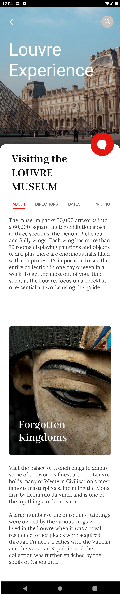

DesignOps - Sample - Travel Agency mobile front-end
This article refers to a design file for a Travel Agency mobile front end made with the Sketch design tool and exported by GxDesignOps plugin in .gxsketch format.
Sample download

Inspecting gxsketch file
You can use any Zip format client to inspect the .gxsketch file content. In this case, we are going to use 7zip file archiver. As you will see, the .gxsketch file contains the .sketch file itself, and three folders with the required assets: gx-preview, font, and images.
When you have doubts about why some controls are not rendered as expected, check these resources first (e.g. if the image is absent or not, or if a font file is not packaged), and in case some of them are missing, report it to your designer.
If you extract the .gxsketch file and open the .sketch file in Sketch on your Mac (after installing all Fonts), you will see something as follows:
Importing gxsketch file
Basically, you must follow the instructions described in the Sketch Import option article.
Once you select the .gxsketch file from your filesystem, the Sketch to GeneXus dialog will be shown as follows:

You can inspect every node in the left-side tree. Every type of node will show you contextual information; e.g., preview (image and layout tree) and GXML code in case of Panels; just GXML code in case of a Theme for describing theme-class properties, a preview for Images and Fonts, etc. Also, you can select/unselect the nodes you want to be imported or not.
When you are sure you want to import the design file, just click on the "OK" button and the Output dialog (General tab) will show you the import progress.

Once it has finished importing, check the generated panels and how they look. Also, check the theme-classes, image objects, and file objects (fonts) imported.
And finally... Think how much time you would spend trying to design those Panels by yourself, importing all those Images and Fonts, and creating all those Theme-classes!
Definitely, you have saved a lot!
Runtime execution
Finally, run the generated Main menu object in order to see the generated panels.
Here is a preview of all four panels, showing how they were designed (Artboard column) and how they look at runtime without making any changes (Android/iOS columns).
| Designer | Developer | |||
| Sketch | Artboard | GeneXus | Android | iOS |
| Home | ViewHome |  |
||
| Attractions |  |
ViewAttractions | ||
| Attraction About | ViewAttractionAbout |  | ||
| Attraction Directions | ViewAttractionDirections |  |
 |
|
You may notice there are a few differences between what it was designed and how it looks at runtime, but you as a developer can make adjustments and achieve a perfect result.
Either way, all panels were almost perfect on the first try!
Scope
| Generators | Android, Apple, Angular |
See also
Availability
This sample has been made for GeneXus 17.
| Backlinks |
| Toc:DesignOps and GeneXus |